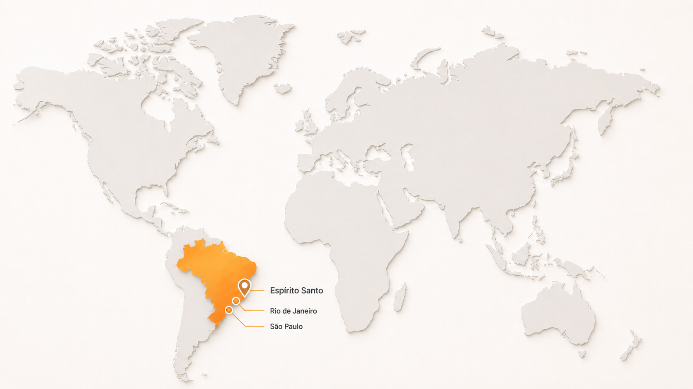

Mapeamento de demanda
Identificação de regiões, clientes potenciais, recorrência de compra e oportunidades comerciais por estado e cidade.
A Portum Distribuidor Industrial atua no desenvolvimento comercial, distribuição e fornecimento de produtos industriais para clientes empresariais em todo o Brasil.
Trabalhamos com EPI, EPC, equipamentos industriais, partes, peças, componentes e soluções aplicadas à rotina operacional de empresas, indústrias e instituições.
A Portum Distribuidor Industrial é uma empresa localizada em Serra, na Região Metropolitana da Grande Vitória, em posição estratégica para atendimento ao mercado industrial do Espírito Santo, Rio de Janeiro, São Paulo e demais regiões do Brasil.
Nossa atuação combina distribuição, desenvolvimento comercial e relacionamento com fabricantes nacionais e internacionais, sempre com foco em viabilidade de fornecimento, recorrência de demanda e expansão comercial organizada.
A Portum opera como ponte entre a necessidade do mercado e a indústria, apoiando o fornecimento de produtos profissionais com aplicação prática na operação de empresas, indústrias e instituições.
Atuação a partir do Espírito Santo, com conexão comercial e logística para o mercado brasileiro.
A Portum identifica oportunidades de demanda, avalia produtos com potencial comercial e desenvolve caminhos de fornecimento para o mercado empresarial.
Atuamos com Equipamentos de Proteção Individual, Equipamentos de Proteção Coletiva, equipamentos industriais, partes e peças de máquinas, componentes técnicos e produtos profissionais voltados à operação de empresas, indústrias e instituições.
Nosso trabalho é aproximar fabricantes e compradores empresariais, reduzindo barreiras comerciais e ajudando produtos industriais a ganharem presença no mercado brasileiro.
Produtos aplicados à rotina de empresas, indústrias e equipes técnicas com foco em desempenho, proteção e continuidade operacional.
Atendimento nacional com organização comercial e logística orientada para recorrência, previsibilidade e escala.
A Portum organiza operações comerciais considerando volume, localização, recorrência de compra, prazos de fornecimento, condições logísticas e perfil da demanda.
O objetivo é transformar oportunidades pontuais em fornecimentos recorrentes, com melhor planejamento entre fabricante, distribuidor e cliente final.
Mapeamos oportunidades comerciais, especificações recorrentes, comportamento regional de compra e viabilidade de expansão para fabricantes e fornecedores industriais.

Espírito Santo · Rio de Janeiro · São PauloLocalização conectada aos principais eixos industriais e comerciais do Brasil.
A Portum utiliza ferramentas próprias de automação para mapear demandas industriais em diferentes regiões do Brasil. Essa análise considera cidade, estado, recorrência de fornecimento, sazonalidade de compra, volumes regionais e preços praticados.
Também avaliamos características técnicas dos produtos, como especificações recorrentes, materiais, dimensões, padrões construtivos, marcas atuantes e fabricantes concorrentes.
Com essas informações, apoiamos decisões comerciais, ajustes de produto, definição de portfólio e expansão para regiões com maior potencial de demanda.
Identificação de regiões, clientes potenciais, recorrência de compra e oportunidades comerciais por estado e cidade.
Avaliação de especificações, materiais, dimensões, padrões construtivos, marcas concorrentes e aderência ao mercado.
Apoio ao fabricante na precificação, posicionamento, desenvolvimento de canais e expansão comercial no Brasil.
Além da atuação com fabricantes nacionais, a Portum avalia oportunidades de importação de produtos industriais da Europa e da Ásia para o Brasil.
Essa frente é conduzida de forma técnica e comercial, considerando viabilidade do produto, demanda potencial, competitividade, documentação, logística e aderência às necessidades de clientes empresariais.
A importação amplia as possibilidades de portfólio, desenvolvimento de novas linhas e conexão de fornecedores internacionais a oportunidades reais no mercado brasileiro.
Relacionamento com parceiros externos para análise de produtos, desenvolvimento comercial e oportunidades de fornecimento.
A Portum busca parcerias com fabricantes nacionais e internacionais interessados em ampliar presença comercial, distribuição e recorrência de fornecimento no Brasil.
Se você é fabricante nacional ou internacional e tem interesse em nossos serviços de desenvolvimento comercial, distribuição ou introdução de produtos no mercado brasileiro, entre em contato com a Portum.
Para avaliação inicial, solicitamos o envio de apresentação institucional, catálogo de produtos e ficha técnica pelo e-mail portum@portumdistribuidor.com.br. Após a análise, realizamos reuniões técnicas e comerciais para avaliar potencial de mercado, viabilidade operacional e modelo de distribuição.
Análise de produtos e parceiros com foco em aplicação prática, competitividade e aderência ao mercado brasileiro.
A Portum está aberta a novas parcerias comerciais com foco em desenvolvimento de mercado, distribuição e fornecimento para a indústria brasileira.
Envie sua demanda comercial, apresentação de fabricante, catálogo ou ficha técnica para avaliação inicial.